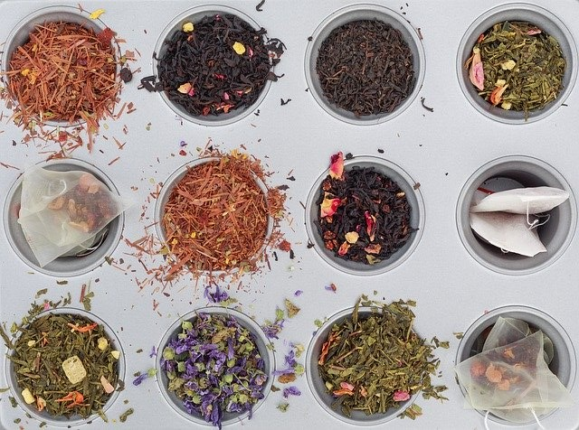
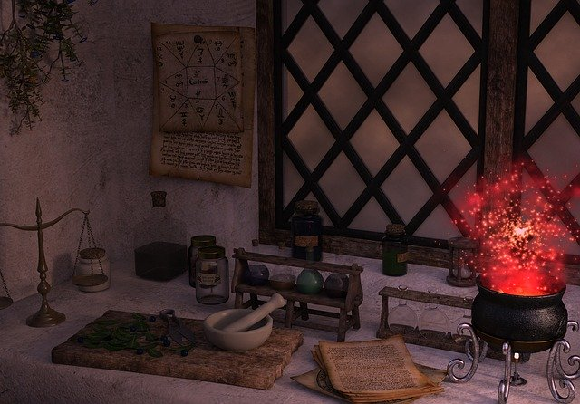
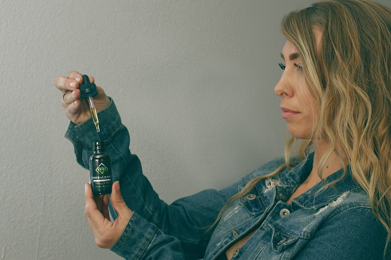
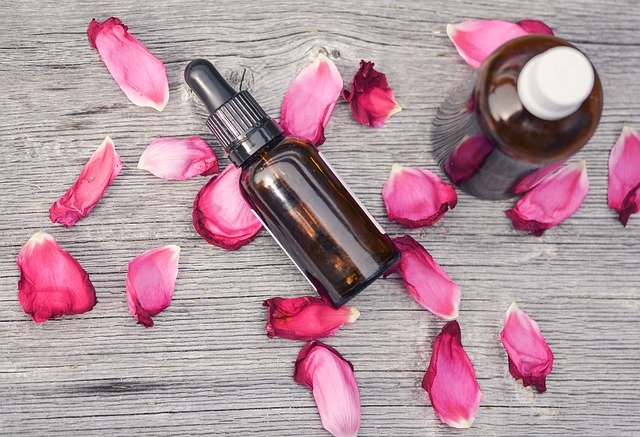
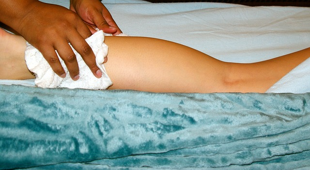

offerings


Simple Tips to Help Unlock the Healing Power of Herbs

Herbs have the Power to Unlock a New Level of Peace and Health
There are many ways to use herbs whether practicing spiritualism, cultural traditions, creating a certain atmosphere or a specific dish. Herbs can be used by extracting the essential elements that make up an herb’s healing properties. Listed below are a few ways to get contact with the healing benefits of herbal medicine:
Tisane
Just a fancy word for herbal tea, Tisanes are a great way to get herbs straight into your body. Boil 2 tsp of herbs in about 2 cups of water for around ten minutes depending on the type of herbs. The longer the herbs brew the more potent herbal powers of the tea will be although sometimes at the cost of not tasting very good. Licorice, Marshmallow root, Ginger root, Peppermint are all great tisanes to be added to any healthy rotation.
Decoction
Boil 1oz of herbs in 16oz of water and simmer the concoction until it is a quarter the amount of liquid. After sieving or straining the herbal infusion this potent decoction can be served as a medicinal tea or possibly with a compress depending on the herbs and ailments.
Tincture
If you are someone who does not have time or desire to drink tea but you still want to receive the many benefits of ingesting herbs a tincture may be the best choice. This is made by adding 8 oz of herbs to about 16 oz of alcohol such as brandy or vodka. Put it in a warm place for 2-3 weeks giving it a little shake twice a day. Then strain it and keep it in a bottle with a dropper. This will give you a strong herbal tincture and a couple of drops under the tongue should do the trick.
Essential Oils
The most commonly found form of concentrated herbs are extracted in oils. They are very easy to find in stores and online and one of the more difficult DIY projects, but can be worth it to make at home. Essential oils are used for aromatherapy mostly, but they can sometimes be applied to the skin and are great in a bath. Lavender, Rosemary, and Eucalyptus are great essential oils for increasing a peaceful atmosphere, or making a bath bring your skin to a soft nourished state.
Compress
Another way to apply herbs directly to the skin is with a compress. The power of a cold compress is almost exclusively experienced during a fever. The back of the neck and the forehead are sources of temperature regulation and a compress in these areas can help regulate your body temperature. Now an herb infused compress can transmit the herbs into the pores and heal a specific area. A hot compress is made by soaking a cloth in an herbal decoction and pressing it against the skin. For best results the compress should be as hot as possible while still bearable because this will open up the pores and allow more transference of healing essentials.
WARNING: Herbs are very powerful so make sure you have done your research on which herbs to use and how much is safe to ingest. It can be dangerous for any pregnant person so be sure to consult a doctor or a qualified herbalist.
Herbs have the Power to Unlock a New Level of Peace and Health
There are many ways to use herbs whether practicing spiritualism, cultural traditions, creating a certain atmosphere or a specific dish.
Herbs can be used by extracting the essential elements that make up an herb’s healing properties.
Listed below are a few ways to get contact with the healing benefits of herbal medicine:
Tisane
Just a fancy word for herbal tea, Tisanes are a great way to get herbs straight into your body.
Boil 2 tsp of herbs in about 2 cups of water for around ten minutes depending on the type of herbs.
The longer the herbs brew the more potent herbal powers of the tea will be although sometimes at the cost of not tasting very good.
Licorice, Marshmallow root, Ginger root, Peppermint are all great tisanes to be added to any healthy rotation.
Decoction
Boil 1oz of herbs in 16oz of water and simmer the concoction until it is a quarter the amount of liquid.
After sieving or straining the herbal infusion this potent decoction can be served as a medicinal tea or possibly with a compress depending on the herbs and ailments.
Tincture
If you are someone who does not have time or desire to drink tea but you still want to receive the many benefits of ingesting herbs a tincture may be the best choice.
This is made by adding 8 oz of herbs to about 16 oz of alcohol such as brandy or vodka.
Put it in a warm place for 2-3 weeks giving it a little shake twice a day.
Then strain it and keep it in a bottle with a dropper.
This will give you a strong herbal tincture and a couple of drops under the tongue should do the trick.
Essential Oils
The most commonly found form of concentrated herbs are extracted in oils.
They are very easy to find in stores and online and one of the more difficult DIY projects, but can be worth it to make at home.
Essential oils are used for aromatherapy mostly, but they can sometimes be applied to the skin and are great in a bath.
Lavender, Rosemary, and Eucalyptus are great essential oils for increasing a peaceful atmosphere, or making a bath bring your skin to a soft nourished state.
Compress
Another way to apply herbs directly to the skin is with a compress.
The power of a cold compress is almost exclusively experienced during a fever.
The back of the neck and the forehead are sources of temperature regulation and a compress in these areas can help regulate your body temperature.
Now an herb infused compress can transmit the herbs into the pores and heal a specific area.
A hot compress is made by soaking a cloth in an herbal decoction and pressing it against the skin.
For best results the compress should be as hot as possible while still bearable because this will open up the pores and allow more transference of healing essentials.
WARNING: Herbs are very powerful so make sure you have done your research on which herbs to use and how much is safe to ingest. It can be dangerous for any pregnant person so be sure to consult a doctor or a qualified herbalist.
Start Here
Check out our Daily Color and Mantra Intention Tool